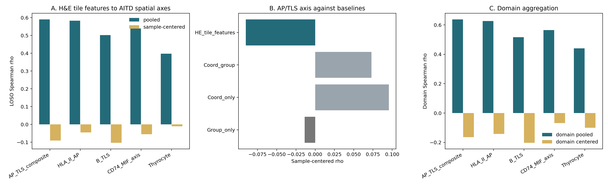

01TL;DR
What Worked
Pooled H&E tile features track the AP/TLS composite with Spearman rho 0.590 across 16,985 spots. That is the disease/sample-level structure, not a robust local pathology readout.
What Fails The Gate
After centering within held-out samples, AP/TLS rho becomes -0.090. Domain aggregation is also negative at -0.164, so the dataset is locked as a caveat.
| Metric | Value | Source |
|---|---|---|
| Dataset | GSE248205, Control n=2, GD n=3, HT n=3 | GSE248205_PATHOLOGY_AITD_REPORT.md |
| Spots | 16,985 | GSE248205_PATHOLOGY_AITD_SUMMARY.json |
| AP/TLS H&E pooled rho | 0.590 | gse248205_pathology_model_summary.tsv |
| AP/TLS H&E sample-centered rho | -0.090 | gse248205_pathology_model_summary.tsv |
| AP/TLS domain sample-centered rho | -0.164 | gse248205_pathology_domain_summary.tsv |
| Locked disposition | NO_GO_LOCAL_HE_CAVEAT_ONLY | GSE248205_PATHOLOGY_AITD_SUMMARY.json |
02Design
Inputs
The script uses the existing GSE248205 module-score table from the HLA two-paper synthesis and the shipped high-resolution tissue images for each sample.
project/results/hla_two_paper_synthesis_2026_05_09/gse248205_aitd_spatial_validation/tables/T02_gse248205_spot_module_scores.tsv.gz
Model
A fast Path2Space-style screen extracts handcrafted RGB/HSV/texture features around each spot, smooths target labels by KNN-8, and evaluates leave-one-sample-out ridge prediction.
| Target | Interpretation | Gate |
|---|---|---|
AP_TLS_composite | antigen presentation plus TLS-like spatial module | must survive sample-centered LOSO |
HLA_II_AP | Class II antigen presentation module | must beat coordinate/group baselines |
B_TLS | B-cell/TLS neighborhood module | must persist at domain level |
Thyrocyte | thyroid epithelial module | negative-control context |
03Metrics
| Target | H&E pooled rho | H&E sample-centered rho | Median sample rho | Disposition |
|---|---|---|---|---|
| AP/TLS composite | 0.590 | -0.090 | -0.047 | fails local gate |
| HLA-II/AP | 0.583 | -0.046 | -0.064 | fails local gate |
| B/TLS | 0.502 | -0.103 | -0.090 | fails local gate |
| CD74/MIF axis | 0.539 | -0.055 | -0.034 | fails local gate |
| Thyrocyte | 0.398 | -0.011 | 0.028 | no positive support |
The positive pooled values should not be used as a headline because group-only models also recover broad disease separation for AP/TLS and B/TLS.
04Figures


05Decision Matrix
| Question | Observed Result | Disposition |
|---|---|---|
| Can local H&E predict AITD AP/TLS after sample structure is removed? | sample-centered rho -0.090 | NO |
| Does domain aggregation rescue the signal? | domain-centered rho -0.164 | NO |
| Can the pooled rho be cited as positive Paper 2 evidence? | pooled rho is confounded by sample/group structure | NO |
| Can this support Paper 1 MAPK mechanism? | AITD cohort, non-tumor thyroid context, no local gate pass | NO |
| Best use | reviewer caveat and negative-control boundary | CAVEAT-ONLY |
06Sources
| Artifact | Path |
|---|---|
| Script | project/results/p2_image_dm1_v2_foundation_clam_2026_05_07/scripts/gse248205_pathology_aitd_axis.py |
| Report | project/results/p2_image_dm1_v2_foundation_clam_2026_05_07/analysis_supp/gse248205_pathology_aitd_axis_2026_05_09/GSE248205_PATHOLOGY_AITD_REPORT.md |
| Summary JSON | project/results/p2_image_dm1_v2_foundation_clam_2026_05_07/analysis_supp/gse248205_pathology_aitd_axis_2026_05_09/GSE248205_PATHOLOGY_AITD_SUMMARY.json |
| Model metrics | project/results/p2_image_dm1_v2_foundation_clam_2026_05_07/analysis_supp/gse248205_pathology_aitd_axis_2026_05_09/gse248205_pathology_model_summary.tsv |
| Sibling page | Paper 2 Path2Space-inspired spatial reanalysis |
| Hub | Papers hub |